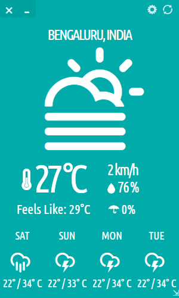

Typhoon

Typhoon is a stylish weather app for GNU/Linux
Fetching latest version...
Ubuntu 22.04+: Open a terminal and add the official PPA to install Typhoon
sudo add-apt-repository ppa:apandada1/typhoon
sudo apt update
sudo apt install typhoon
Alternatively,
download the latest .deb installer from GitHub Releases.
Ubuntu 20.04: Use the .deb package.

Installation Instructions for GNU/Linux